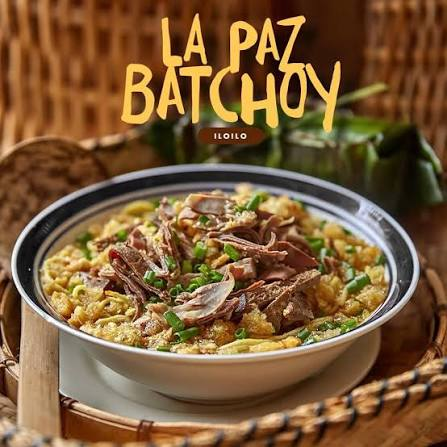
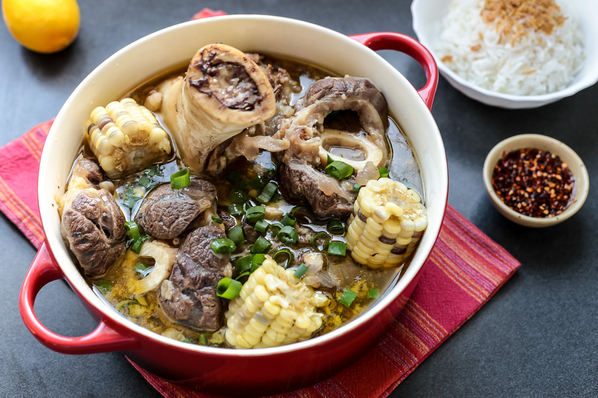
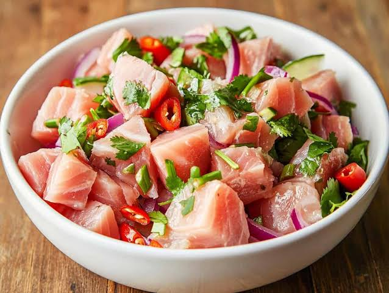

01Soup Specials
La Paz Batchoy
Slow-simmered pork broth, fresh miki, crisp garlic, and egg.
The Sandok table
Food that feels familiar, cooked with patience and served with generosity. Our dishes are designed for the whole table.

01Soup Specials
Slow-simmered pork broth, fresh miki, crisp garlic, and egg.
 02
02Beef
Tender beef short ribs and local vegetables in a bright tamarind broth.

03Soup Specials
Batangas-style beef shank, bone marrow, sweet corn, and pechay.
 04
04Beef
Oxtail and tripe in a toasted peanut sauce with house bagoong.

05Seafood
Yellowfin tuna, native vinegar, calamansi, ginger, and coconut cream.
 06
06Dessert
House preserves, ube halaya, leche flan, and carabao milk ice cream.